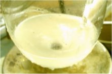
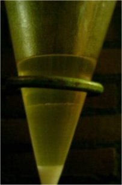
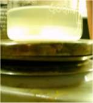

HTML by Rhodium
[Erowid note: This page is archived with the best-available copy, but it is missing associated image files. If you can help us track down the missing images, please let us know.]
This detailed photo essay showing a condensation of 3,4,5-trimethoxybenzaldehyde with nitromethane followed by a NaBH4 double bond reduction to obtain the corresponding 3,4,5-trimethoxyphenyl-2-nitroethane with an overal good yield.
To a solution of 150 mL of acetic acid and 40 mL nitromethane there was added 20.21 gram (103 mmol) 3,4,5-trimethoxybenzaldehyde and 20 mL cyclohexylamine. The addition of the cyclohexylamine caused the RBF to fill up with smoke.
The solution was heated to 95?C and after 90 minutes of heating the orange solution was allowed to cool down.
When the solution had cooled down to to 60?C it was decanted into a beaker for quicker cooling this left a lot of smoke in the RBF, after adding some H2O to the RBF the smoke cleared up and caused formation of some residue yellow crystals.
With good stirring the now 20?C decanted solution was diluted slowly using 325 mL H2O, this caused the formation of a thick yellow crystalline mass.
The crystals from the beaker and the RBF were combined, filtered and washed thouroughly with 3 times with 65 mL H2O. The filtered crystals weighed 23.44 gram after sucking them dry for 20 minutes.
The entire mass recrystalized in 192 mL MeOH (8 mL/g) with 3 ml ethyl acetate to dissolve the impurities that did not go into solution.
In a cold water bath a solution of 2.57 g (68 mmol) NaBH4 in 40 mL ethanol and 70 mL ethylacetate was stirred, to this solution was added 4.07 g (17 mmol) of β-nitro-3,4,5-trimethoxystyrene in small portions.
|  |  |
|---|---|
|  |
The addition caused the temperature never to exceed 25?C, during the addition the solution changed very quickly from yellow to white the last portions made the solution somewhat pink before turning milky white again. Upon completion of the addition the creamy white solution was stirred for 30 more minutes.
To the solution there was added 50 mL H2O while the stirring was continued, gas evolved and the solution turned almost colorless. After 5 minutes of stirring there was very slowly added 50% acetic acid dropwise to quench the excess borohydride, acetic acid was added until gas evolution ceased. The solution was decanted into a beaker, the mixture saturated with solid NaCl and stirred for another 5 minutes which resulted in 2 layers.
The bottom aqueous layer was removed, the isopropanolic phase was dried over MgSO4. Removal of the solvent caused the remaining oil to spontaneously crystalize, the crystals were washed twice with H2O and sucked dry to give 3.45 g 3,4,5-trimethoxynitroethane as creamy white colored crystals. The bottom aqueous phase was back extracted with 2x40 mL ethylacetate and the combined extracts where dried over MgSO4 and removed of solvent under vacuum, the yellow oil that remained crystalized out after dilution with H2O. The crystals where washed with H2O, filtered and dissolved in 8 ml boiling MeOH, upon standing in the freezer overnight the resulting crystalline white needles weighing 0.31 gram the combined crops where stored in the dessicator under vacuum to prevent decomposition.